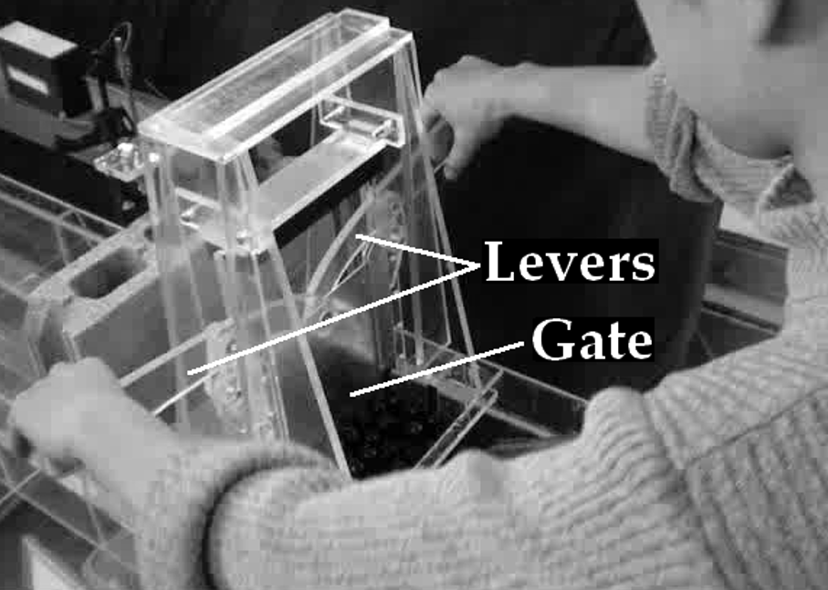

課題２ 一様勾配斜面上を崩落する物体により生成される津波 
概要
地すべり，山体崩壊や，氷山の崩落等により生成される津波は，崩落体と水が相互に干渉して生成される．課題２では，一様勾配斜面上を崩落する物体により生成される津波の１次元伝播を対象とし，水面変動の数値解析結果を水理実験結果と比較する．
内容
図-1に示すような，一様勾配斜面のある水槽を用いる．水槽幅の内寸は，0.2 mである．
まず，この水槽に，密度ρw = 1,000 kg/m3の水（淡水）を貯める．斜面沖側の静水深は，h = 0.09 mとする．
次に，ゲートの岸側に崩落体を積載する．ゲートの最下端は，静水状態の汀線位置とする．
そして，図-2に示すレバーを押し下げてゲートを上方に素早く開ける．
各ケースの実験条件を表-1に示す．Case A1，A2，B1及びB2の崩落体は，水である．ここで，ζは，図-1に示すように，崩落体の積載時の高さである．他方，Case Cの崩落体は，剛体群であり，直径0.02 m及び長さ0.197 mの円柱９本とする．円柱の材質は，ポリテトラフルオロエチレン（PTFE）である．円柱群の積載状況を図-3に示す．
事前公開データ（使用申込はこちら）
Case A1及びB2に対する，2地点P及びQにおける水位の時系列を事前に公開する．ここで，地点P及びQは，静水時の汀線から，それぞれ，0.7 m及び1.15 m沖側の地点である．
比較方法
表-1に示すCase A2，B1及びCに対して，地点P及びQにおける水位の時系列や，津波高さを比較する．また，可能であれば，崩落体の突入状況をビデオ映像と比較する．
表-1に示す五つのケースに対して，地点P及びQにおける水位の時系列や，津波高さに関して比較する．また，可能であれば，ビデオ映像を参照しながら，崩落体の突入状況を比較する．ただし，Case Cは，必須とせず、比較対象とするかどうかは，参加者の自由とする．
参考文献
Kakinuma, T.: Tsunami generation due to a landslide or a submarine eruption, Tsunami (ed. Mokhtari, M.), InTech, pp. 35-58, 2016.【Link】
お問い合わせ
課題に関する質問などはこちら．
計算チームの参加申込はこちら．
図表
図-1 一様勾配斜面のある地すべり津波実験水槽

図-2 ゲートとレバー（Kakinuma，2016）
表-1 実験条件
| 崩落体の種類 | 崩落体の密度 ρb | 斜面勾配 tanβ | 崩落体の積載状況 | |
| Case A1 | 水 | 1,000 kg/m3 | 1.0 | ζ = 0.15 mの直角二等辺三角形 |
| Case A2 | ζ = 0.1 mの直角二等辺三角形 | |||
| Case B1 | 0.5 | ζ = 0.15 mの直角三角形 | ||
| Case B2 | ζ = 0.1 mの直角三角形 | |||
| Case C | 剛体の円柱群 | 2,300 kg/m3 | 1.0 | 図-3 |

図-3 円柱群の積載状況